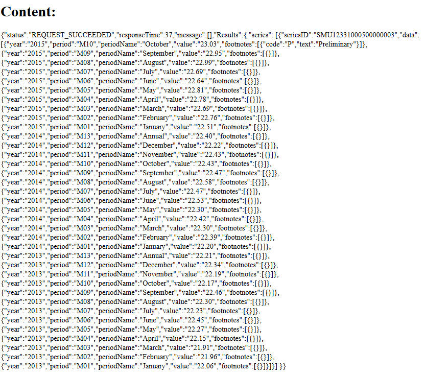

To retrieve data for single series, we need to specify an HTTP type, a RESTful URL and series ID for a single series. HTTP type for single series is GET. URL for a single series request has this format: http://api.bls.gov/publicAPI/v1/timeseries/data/series_id. Here we need to substitute 'series_id' with a set of alpha-numeric characters that identify specific series. You may ask where to find this ID? Well. It can involve some research. The BLS web site does not provide any tool or database that hold the IDs for all series. However, you can find some here.
Once you have obtained the series ID, it is very easy to make a request and retrieve data for the desired series. Lets look at an example:
var request = require('request');
request('http://api.bls.gov/publicAPI/v1/timeseries/data/SMU12331000500000003',
function (error, response, body){
if (!error && response.statusCode == 200){
console.log(body);}
})In the example above, we are using the request library for Node.js. We make the GET request to http://api.bls.gov/publicAPI/v1/timeseries/data/SMU12331000500000003. We use a series ID that will retrieve data about State and Area Employment, Hours, and Earnings for Miami-Fort Lauderdale-West Palm Beach, FL (first 10 digits of the series ID indicates that). The data will be retrived for private sector (digits from 11th to 18th position in the series ID indicates that). The last two digits 03 of a series ID indicates that we are requesting an average hourly earnings of all employees in dollars.
If we run this code, we will see the following output in the console:
We have successfully retrived data for three years, 2013-2015. By the way, when you are requesting data for a single series, the response is always for the past three years. For instance, the average hourly payments in October were $23.03 for a requested area. So, the response returns the following data:
yearperiodperiodNamevaluefootnotesIf we need data to be displayed on the page we can run the following code:
var request = require('request');
app.get('/',function(req,res,next){
var context = {};
request('http://api.bls.gov/publicAPI/v1/timeseries/data/SMU12331000500000003',
function(err, response, body){
if(!err && response.statusCode == 200){
context.results = body;
res.render('test',context);
}
});
});We will get the following response in JSON format:
In the next section we will see how to make a request for multiple series. It allows the retrival of data for up to 25 series.
Prev Next